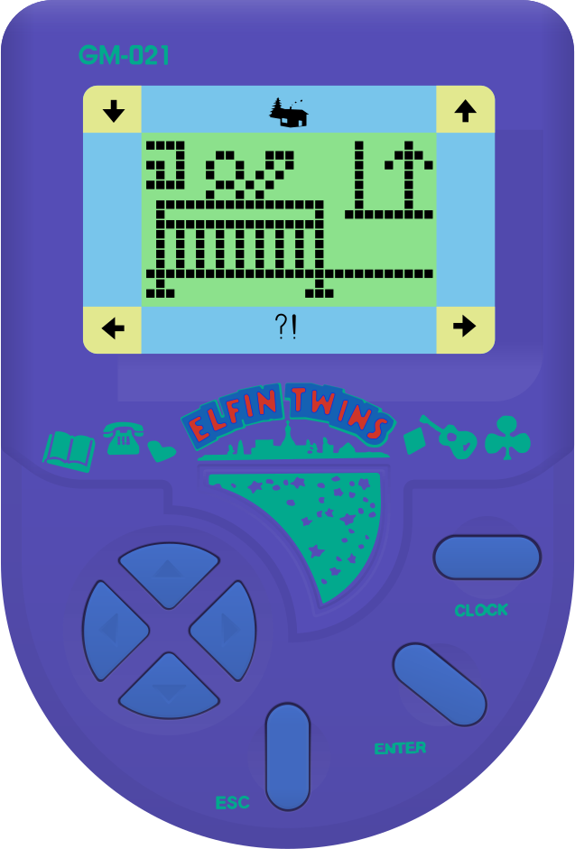
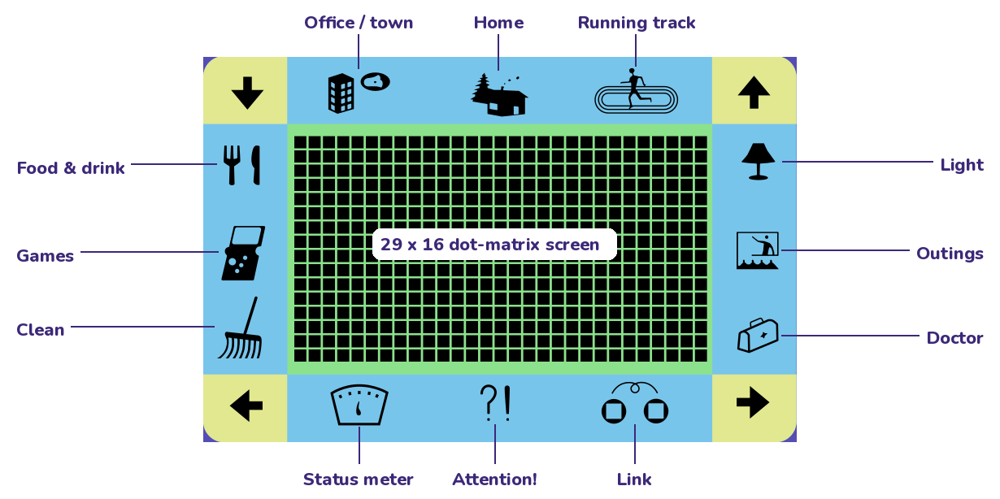
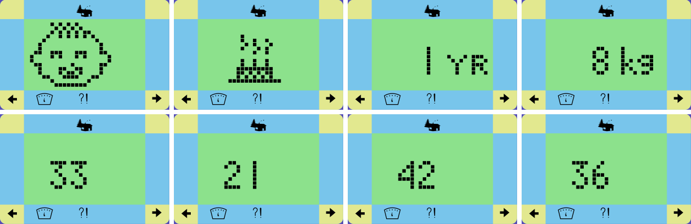
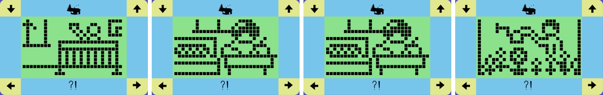
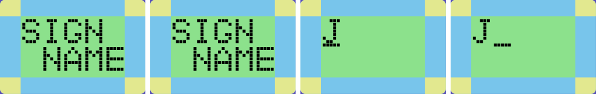
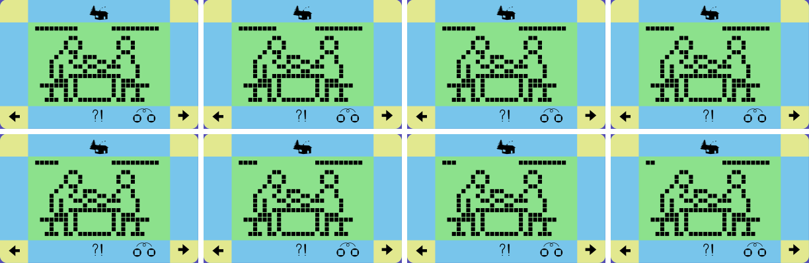
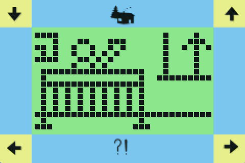
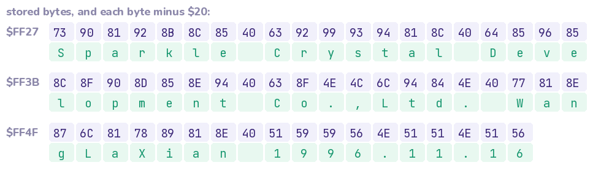
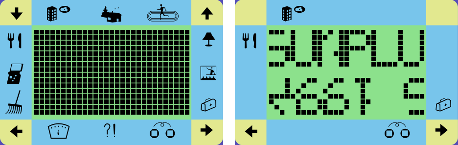
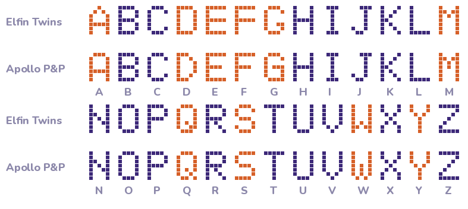

This document describes the Elfin Twins GM-021 handheld virtual pet at three levels: the hardware as seen by
its program, the firmware's structure, and the game rules it implements. It also documents the Game Boy
Advance port built on top of that knowledge. No original documentation was available. Everything was derived from
the 32 KB ROM dump distributed with BrickEmuPy, whose Python emulator core (cores/SPLB20.py) and
device description (assets/ElfinTwins.brick, .svg) were the starting point.
The method combined four tools, all in the repository:
gba/tools/elfin_disasm.py) that follows the ROM's
pha/pha/rts jump tables and annotates the code with the symbols of
elfin_symbols.py. 15430 bytes of code reachable from the vectors and jump tables (47.1% of the ROM), 172 subroutines, 8 jump tables; the rest is graphics, animation scripts, melodies and lookup tables.gba/host/elfin_sim.py, explore.py) to press buttons,
poke RAM, record LCD frames and trace calls of chosen routines (for example the stat routines) with the game mode in
effect.gba/host/link_sim.py) that wires two emulated toys together.Each statement about the game is tagged with how it is known: code read in the disassembly, observed in instrumented emulation, inferred from indirect evidence (for example a name guessed from an effect or a picture).
The toy is built around a Sunplus SPLB20, a 4-bit-era LCD controller with a reduced 6502 CPU (70 opcodes, no Y-indexed modes, no stack page: the stack lives in zero page). BrickEmuPy runs it at 560 kHz from its RC oscillator with a 32 768 Hz sub-clock for timekeeping. The 64 KB address space is laid out as follows code:
| Range | Contents |
|---|---|
$0000–$003F | LCD RAM, 64 bytes (512 segment bits, 480 used) |
$0040–$007F | special function registers (only $70–$7F implemented) |
$0080–$00FF | CPU RAM, 128 bytes: game state and the stack (SP starts at $FF) |
$0200–$09FF | data RAM, 2 KB, mirrored (e.g. at $1000). The game uses $1080–$10AF for the name, password and quiz data. |
$8000–$FFFF | ROM, 32 KB. Vectors: NMI $8C01, RESET $970C, IRQ $8C00 (a bare rti).
$8000–$83D4 is Sunplus's factory test program, entered through test vectors at $FFF2–$FFF7 (§8.2).
$FF27 holds the developer credit (§8.1). |
| Addr | Name | Function |
|---|---|---|
| $70 | LCD_CFG | LCD configuration |
| $71 | PA_DIR | port A direction: 1 = input, 0 = output |
| $72 | PA_CFG | port A output config; bits 6-7 = buzzer |
| $73 | PA_DATA | port A: b0 ESC b1 LEFT b2 RIGHT b3 CLOCK b4 ENTER (0 = pressed), b5 LINK |
| $74 | PXY_DATA | port X/Y (unused) |
| $75 | PZ_DATA | port Z (unused) |
| $76 | LCD_BIAS | LCD bias / contrast |
| $77 | KEYSCAN_L | key scan output (unused) |
| $78 | KEYSCAN_H | key scan output (unused) |
| $79 | INT_CFG | interrupt enable (write) / pending flags (read, clears) |
| $7A | SYS_CTRL | system control: b7 stop osc, b5 32k, b4 timer, b3 LCD on, b2 LCD en |
| $7B | TC_PRESET | down-counter preset = buzzer pitch |
| $7C | PRESCALER | timer prescaler (1 << n) |
| $7E | KEYSCAN_CTRL | key scan control |
| $7F | WDT_CLR | watchdog clear |
Two register behaviours matter for emulation. Reading INT_CFG returns the pending flags and
clears them. The stop bits of SYS_CTRL act on a 0→1 transition: writing $AD while bit 7
is already set does not stop the oscillator. That is why the wake-up path always writes $2C first.
All interrupts are delivered as NMI, gated by bit 7 of INT_CFG. Sources: 2 Hz tick (b0),
128 Hz tick (b1), power key PA0 (b2), any other port-A key (b3), down-counter underflow (b4). The IRQ vector is
unused. The firmware spends about 90% of the time asleep. At $8E7A it loads
INT_CFG from int_sleep (normally $8D: NMI, both keys, 2 Hz) and writes
SYS_CTRL=$AD, stopping the main oscillator while the 32 kHz clock and the LCD keep running.
An interrupt during STOP does not enter the NMI handler: the chip restarts at the RESET vector, and
$970C uses the pending flags ($79 & $8F) to tell a wake-up from a cold start
code.
SYS_CTRL=$2C, SP=$FF, irq_flags = INT_CFG. Any flag set → wake $8EB2. Otherwise cold start: clear RAM, hardware init, LCD test if a key is held, else new_pair $9827.INT_CFG=int_sleep, SYS_CTRL=$AD → STOP until the next interrupt.The 2 Hz and 128 Hz ticks are derived from the 32 kHz clock (280 000 and 4 375 CPU cycles at 560 kHz).
The 8-bit down counter is clocked at clk / 2PRESCALER and reloads from
TC_PRESET. It also drives the buzzer, which sounds when PA_CFG bits 6–7 are set and
the timer is enabled:
f_buzzer = 560000 / 2^PRESCALER / (TC_PRESET + 1)
Melodies are note lists (duration, preset) walked by the NMI handler on the 128 Hz tick through
snd_len/snd_ptr. snd_play starts melody X from a pointer table at
$F7D5/$F7EB code.
| Bit | Use | Notes |
|---|---|---|
| 0 | ESC | the "power key" interrupt source |
| 1 | LEFT | active low, internal/external pull-ups (mask option 255) |
| 2 | RIGHT | |
| 3 | CLOCK | |
| 4 | ENTER | |
| 5 | LINK | open-drain link wire; input normally, output-low to transmit |
| 6–7 | buzzer | via PA_CFG |
The toy has seven buttons but only five contacts. UP closes LEFT+RIGHT and DOWN closes
CLOCK+ENTER (PA&$1F = $19 and $07) code.
BrickEmuPy's ElfinTwins.brick originally wired DOWN to RIGHT+CLOCK ($13), which the
decoder ignores. The copy of ElfinTwins.brick in this repository uses the corrected mask 24.
480 of the 512 LCD RAM bits are used: a 29 × 16 dot matrix (464 bits) and 16 icons printed on the
panel. The bit order is irregular (Appendix B). The firmware draws with a bitmap blitter (gfx_draw
$9061) and addresses icons through a table of (byte, mask) pairs at $9E26
code.

| Icon | LCD byte | Bit | Mask |
|---|---|---|---|
arrow_down | $2F | 0 | $01 |
arrow_left | $17 | 0 | $01 |
arrow_right | $0C | 6 | $40 |
arrow_up | $04 | 6 | $40 |
bag | $34 | 6 | $40 |
building | $0F | 0 | $01 |
clean | $27 | 0 | $01 |
exercise | $24 | 6 | $40 |
food | $37 | 0 | $01 |
game | $3F | 0 | $01 |
house | $07 | 0 | $01 |
lamp | $2C | 6 | $40 |
link | $14 | 6 | $40 |
meter | $1F | 0 | $01 |
picture | $3C | 6 | $40 |
question | $1C | 6 | $40 |
The core implements 70 opcodes of the 6502 with standard encodings and 6502-like cycle counts; the other 186
opcodes are illegal. Decimal mode exists (sed) but the game does not rely on it. See Appendix C.
The program is event-driven around the sleep/wake cycle of §2.3. Nothing runs in a main loop. Every piece of work
starts from a wake-up: the 2 Hz tick, a key, or an edge on the link line. The NMI handler itself ($8C01)
only runs while the CPU is awake, for example during animations and delays. It performs the 2 Hz tick and steps
the melody engine on the 128 Hz tick. Long animations are therefore written as sequences of short steps, one
per wake-up, with their progress kept in RAM (sub_sel, $C0, $C1 …)
code.
tick_2hz $8C6D keeps two independent sets of counters code:
| Counter | Range | On overflow |
|---|---|---|
clock: clk_halfsec → clk_min → clk_hour | 120 / 60 / 24 | — |
life: life_halfsec → life_min | 120 / 10 | every 10 minutes: life_10min++, night_flag, the 10-minute rules (§5.2) |
life_10min | 144 | every 24 h: age_days++, growth_stage, stats −1, lifespan check, birthday |
The clock can be set and stopped by the player, while the life timer only counts. So a pair's birthday is 24 hours
after it arrived, whatever the clock says. On 118 of 120 ticks the routine only increments
clk_halfsec and life_halfsec, which is what makes fast catch-up possible (§7.6).
key_decode $8FB8 compares PA&$1F with the value seen when the key went down
(key_raw) on each 128 Hz wake-up and counts in key_hold. Most keys are accepted after
4 identical samples (31 ms). ENTER, ESC and CLOCK also have a long form after 255 samples (2 s)
code:
| PA&$1F | Contacts | Code | Name | PA&$1F | Contacts | Code | Name |
|---|---|---|---|---|---|---|---|
| $19 | LEFT+RIGHT | 1 | UP | $0F | ENTER | 5 / 7 | ENTER / long |
| $07 | CLOCK+ENTER | 2 | DOWN | $1E | ESC | 6 / 9 | ESC / long |
| $1D | LEFT | 3 | LEFT | $17 | CLOCK | 8 / B | CLOCK / long |
| $1B | RIGHT | 4 | RIGHT | $0E | ESC+ENTER | A | rescue / reset |
mode ($BD) holds the current screen in its low nibble and a sub-state in its high
nibble. Two parallel 15-entry jump tables are indexed by the low nibble code:
| Mode | Meaning | Tick handler (T_957F) | Key handler (T_959D) |
|---|---|---|---|
| $0 | Home (normal life) | $98E8 home_tick | $9AF6 home_key |
| $1 | Food & drink | $A007 food_tick | $A07C food_key |
| $2 | Light | $A287 lamp_tick | $A305 |
| $3 | Games | $A386 game_tick | $A40A game_key |
| $4 | Doctor / hospital | $AA8E doctor_tick | $AAEA |
| $5 | Clean | $AAED clean_tick | $AB37 |
| $6 | Status meter | $AB3A meter_tick | $AB84 meter_key |
| $7 | Outings | $AFAD outing_tick | $B0B9 outing_key |
| $8 | Asleep (lights off) | $BF12 sleep_tick | $BF7F |
| $9 | Birthday | $BFED birthday_tick | $C012 |
| $A | Collapsed | $C015 collapse_tick | $C09B collapse_key |
| $B | Farewell (end of life) | $C103 ending_tick | $C140 |
| $C | Opening story + SIGN NAME | $C2CB intro_tick | $C1C4 |
| $D | Password | $95BB password_tick | $9631 password_key |
| $E | Link session | $B76C link_tick | $B7ED link_key |
Modes 1–5, 7 and E return home after 240 ticks (2 minutes) without a key (idle_ticks). Any mode can be
interrupted by the clock screen (flags_b9 bit 7) and by the password prompt.
The menu cursor menu_sel is a one-hot byte that LEFT/RIGHT rotate. ENTER converts it to a mode
through the table at $9CC2 = 02 07 04 0E 06 05 03 01 (indexed by the bit position,
counted from the MSB): lamp→2, outing→7, doctor→4, link→E, meter→6, clean→5, game→3, food→1. ENTER only works while the cursor
icon is shown (flags_b7 bit 2) and not during a "busy" animation (flags_b9 bit 2).
The icon table at $9E26 lists, in order: the 8 menu icons, ?!, the three locations and the four
arrows code.
gfx_draw copies a bitmap from ROM (gfx_ptr) into LCD RAM at (gfx_x,
gfx_y). Scenes are started with anim_start $C641 using an id in anim_id
(for example $4C birthday, $4E sleepy, $80 mess, $82 ill, $52–$56 link games).
Idle life at home is a random choice of short scenes from per-location, per-stage tables at $9AD3/$9AD9/$9ADF.
About 55% of the ROM is data: bitmaps, scene scripts, melodies and lookup tables
code.
All game state lives in the 128 bytes of CPU RAM. The stack grows down from $FF and uses about 16 bytes.
Names are those of elfin_symbols.py. Flags are only listed where their meaning is established.
| Addr | Name | Meaning |
|---|---|---|
| $80 | lifespan | days the pair will stay: 23-26, chosen at birth (rnd & 3) + 23 |
| $81 | rnd | random number, advanced by rnd_next |
| $82 | clk_halfsec | clock: half-seconds 0-119 |
| $83 | clk_hour | clock: hour 0-23 |
| $84 | clk_min | clock: minute 0-59 |
| $85 | irq_flags | INT_CFG pending flags latched at wake-up |
| $86 | irq_nmi | pending flags seen by the NMI handler |
| $87 | int_sleep | INT_CFG value used while asleep ($8D normally, $8C = CLOCK STOP) |
| $88 | life_10min | life timer: 10-minute blocks of the current day, 0-143 |
| $89 | life_min | life timer: minutes 0-9 |
| $8A | life_halfsec | life timer: half-seconds 0-119 |
| $8B | idle_ticks | 2 Hz ticks without input in a sub-screen (240 = back home) |
| $8C | weight | weight in kg, 8-99 |
| $8D | age_days | age in days ('YR' on the meter), starts at 1 |
| $8E | st_mood | mood (flowers page) 0-33, shown x3 |
| $8F | st_iq | IQ 0-33, shown x3 |
| $90 | st_stamina | stamina (sneaker page) 0-33, shown x3 |
| $91 | st_social | friendship (people page) 0-33, shown x3 |
| $92 | money | money in $100 units, 0-99 (0 = collapse) |
| $93 | tummy | meals in the tummy 0-5 (0 = hungry) |
| $94 | drinks | drinks 0-5 (0 = thirsty) |
| $95 | sickness | sickness 0-10: >=5 ill, >=10 collapse |
| $96 | dirt | dirt from digested meals: >=2 needs a bath, >=3 costs money |
| $97 | care_clock | 10-minute counter since wake-up driving hunger/thirst/digestion |
| $98 | ill_clock | 10-minute counter while ill (6 = one hour) |
| $9A | snd_len | melody: remaining duration of the current note |
| $9B | snd_ptr | melody: pointer to the note list (lo) |
| $9C | snd_ptr_hi | melody: pointer to the note list (hi) |
| $9D | key | decoded key: 1 UP 2 DOWN 3 LEFT 4 RIGHT 5 ENTER 6 ESC 7 ENTER-long 8 CLOCK 9 ESC-long A ESC+ENTER B CLOCK-long |
| $9E | key_raw | PA_DATA & $1F when the key went down |
| $9F | key_hold | key debounce / hold counter (4 = pressed, 255 = long) |
| $A0 | gfx_x | sprite draw: x position |
| $A1 | gfx_y | sprite draw: y position |
| $A2 | gfx_ptr | sprite draw: pointer to bitmap (lo) |
| $A3 | gfx_ptr_hi | sprite draw: pointer to bitmap (hi) |
| $AE | tmp_count | temp; pulse count for link_send |
| $AF | tmp | temp (also the level written by link_send!) |
| $B4 | link_edges | link: edges counted by link_recv; also temp |
| $B5 | link_state | link session state (b7 = we are the caller) |
| $B6 | idle_secs | seconds since the last key press (stops at $F0) |
| $B7 | flags_b7 | b1 ?! icon on, b2 menu cursor shown, b3 melody playing, b6 sound off, b7 ... |
| $B8 | flags_b8 | b0 locked (password), b1 TEST MODE, b2 night (22-07), b3 screen initialised, ... |
| $B9 | flags_b9 | b0 CLOCK STOP, b2 busy animation, b3 password set, b6 clock setting, b7 clock screen |
| $BA | sub_sel | sub-screen choice / animation step |
| $BB | life_bits | b0-1 growth stage, b2 choosing destination, b3 room messy, b4-5 destination, b6-7 location |
| $BC | menu_sel | menu cursor, one bit: 1 food 2 game 4 clean 8 meter 10 link 20 bag 40 outing 80 lamp |
| $BD | mode | game mode (low nibble) + sub-state (high nibble) |
| $C4 | anim_id | animation / scene id for anim_start |
| $CA | sel2 | secondary selection (food, location) |
| $CB | mode_saved | mode to return to after an interruption |
| $CC | collapse_10min | 10-minute blocks since collapsing (144 = gone) |
| Stat | RAM | Range | Shown as | Start |
|---|---|---|---|---|
| Mood (flowers) | $8E | 0–33 | ×3 (0–99) | random 0–15 each code |
| IQ | $8F | 0–33 | ×3 | |
| Stamina (sneaker) | $90 | 0–33 | ×3 | |
| Friendship (people) | $91 | 0–33 | ×3 | |
| Money | $92 | 0–99 | ×$100 | rnd + 15 (≈ $2400) |
| Weight | $8C | 8–99 | kg | 8 |
| Age | $8D | 1– | "YR" (days) | 1 |
| Tummy / drinks | $93 / $94 | 0–5 | — | 0 |
| Sickness | $95 | 0–10 | — | 0 |
| Dirt | $96 | 0– | — | 0 |
Every 10 minutes of life (not in modes 8, A, B: asleep, collapsed, farewell) code:
if hour >= 20 and location != home: go home
care_clock += 1
if care_clock % 4 == 3: # every 30 min
drinks -= 1; stamina -= 1; care_clock += 1
if care_clock & 4 == 0: # every 60 min
if tummy == 0: stamina -= 1; weight -= 1; sickness += 1
else: tummy -= 1; dirt += 1
if dirt >= 3: money -= 2; sickness += 1
if care_clock == $60: room messy (life_bits b3)
if sickness >= 5 and ++ill_clock == 6: # every hour while ill
ill_clock = 0; sickness += 1
stamina, IQ, mood -= 1; money -= 2; weight -= 1
if sickness >= 10 or money == 0: collapse (mode A)
Every 24 hours: age_days++, stage recomputed, mood, IQ, stamina and friendship −1. If
age_days ≥ lifespan the farewell starts (mode B), otherwise the birthday scene (mode 9) if the pair is at
home awake or asleep.
Attention (?!) is recomputed on every return to sleep (attention $8E26). It is shown if
tummy = 0, drinks = 0, dirt ≥ 2, sickness ≥ 5, money < 10, the night flag is set, the pair is just waking up
(mode $88) or the room is messy code.
The item code is base + 16·choice with base $10 at home or $70 in town,
plus $30 for teenagers and adults, and choice ∈ {0,1,2} shown in turn. The middle choice
($20 $50 $80 $B0) is a drink: drinks+1, stamina+1, always accepted. $50 (older, at
home) also gives IQ+1, mood−1 and money−1 code (a coffee-like drink
inferred). The other codes are meals: tummy+1, stamina+1, some also weight+1,
refused when tummy ≥ 5. The pair refuses to eat at the running track.
Twelve activity codes, with effects applied by outing_effect $B67D code.
Names are inferred from the pictures and effects:
| Code | Effect | Name | Code | Effect | Name |
|---|---|---|---|---|---|
| $10 | social+1, money−1 | TV obs | $70 | stamina+1, tummy−1 | sport |
| $20 | mood+1, money−1 | music obs | $80 | stamina+1, drinks−1 | sport |
| $30 | IQ+1, social−1 | reading obs | $90 | stamina+1, tummy−1 | sport |
| $40 | IQ+1, money+1 | work | $A0 | money+3, stamina−1 | hard work |
| $50 | social+1, money+1 | work | $B0 | money−4, mood+2, social+2 | party |
| $60 | mood+1, money+1 | work | $C0 | money−2, IQ+2 | lessons |
Some sub-states include a small challenge checked against data RAM $10A0. A wrong answer costs
money−1 and shows the refusal animation code.
| Action | Condition | Effect |
|---|---|---|
| Clean (5) | dirt ≥ 2, or room messy | dirt = 0 / messy cleared; otherwise refusal code |
| Doctor (4) | sickness ≥ 5 | sickness = 0; stamina, IQ, money, weight −1; if sickness ≥ 6 also mood and money −1 code |
| Light (2) | night flag (22:00–07:00) | asleep (mode 8), weight+1; by day: refusal code |
| Games (3) | — | two mini-games (shell game, reels); IQ and stamina up or down with the result observed |
| Status meter (6) | — | 8 pages: stage, age, weight, mood, IQ, stamina, friendship, money code |

life_bits b6–7 hold the location (0 home, 1 town, 2 running track) and b4–5 the destination while
choosing (UP). Babies cannot pick the track. From 18:00 the destination resets to home, and at 20:00 the pair
returns home code. The night flag is set at 22:00 and cleared at 07:00. Between
23:00 and 07:00 a pair still up falls asleep by itself with weight−1. In mode 8, 07:00–08:00 is the alarm
(mode $88). At 08:00 the pair gets up with weight−1, tummy = drinks = 0 and care_clock = 0.
| Event | Rule |
|---|---|
| Arrival | clock 12:00, age 1, weight 8, lifespan = 23 + (rnd & 3), stats random code |
| Stages | first index i with [3, 8, 15, 30][i] ≥ age: baby 1–3, child 4–8, teen 9–15, adult 16+ code |
| Collapse (A) | sickness ≥ 10 or money = 0. ESC+ENTER within 144 ten-minute blocks (24 h): money = 20, sickness = 0, the four stats −7, hospital (mode 4). After 24 h: mode $4A, and ESC+ENTER wipes RAM $85–$FF (new pair, clock kept) code |
| Farewell (B) | age ≥ lifespan: portrait, ESC+ENTER → new pair code |

Clock. CLOCK shows the clock (flags_b9 b7). LEFT/RIGHT toggle the sound (flags_b7 b6,
bell icon). A long CLOCK sets int_sleep=$8C (no 2 Hz interrupt): "CLOCK STOP", time and pet frozen.
ESC then enters setting (LEFT hour+1, RIGHT minute+1). ENTER restarts at 0 s and opens the password screen
code.
Password. Two digits stored at $1090/$1091. 00 = none, otherwise flags_b9 b3. With a
password set, 240 s without a key sets flags_b8 b0, and the next key opens the prompt (mode D). Three wrong
entries are counted in link_edges (reused) code.
Name and test mode. The intro ends with SIGN NAME (mode $8C): 10 characters, 0 = space and
1–26 = A–Z, stored at $1080. ENTER compares them with $C24F =
13 03 04 00 00 14 05 13 14 00, which is "SCD␣␣TEST␣". A match sets flags_b8 b1 (test
mode). On the home screen ENTER then adds a day, ESC adds 10 minutes and a long ESC cycles the stage
code observed.

The original toy uses one PA5 wire, idle high through pull-ups. A sender makes PA5 an output, drives a timed low/toggle sequence, then returns it to input. A falling edge can wake the other unit through the key interrupt code.
link_send $BE0A sends a pulse train from tmp_count; link_recv $BE41
returns the number of edges it observed. The receiver sees one fewer counted edge than the sender's
tmp_count. The responder's initial answer is a separate wake pulse, not a normal counted packet
code observed.
| Sender tmp_count | Receiver sees | Meaning |
|---|---|---|
| 11 | 10 | initial hello; the auto-responder accepts exactly 10 ($8ED4-$8ED9) |
| special low pulse | wake event | responder answer in state 4 ($BA91); not a counted packet |
| 8 | 7 | context-dependent ready / acknowledgement / heartbeat |
| 2 / 3 / 4 | 1 / 2 / 3 | select tug-of-war / rock-paper-scissors / arm wrestling |
| 5 | 4 | completion/result notification used by the competitive games |
| 15 | 14 | cancel / reset the link session |
caller responder
------ ---------
Link + ENTER: B5=$80, send 11 ───► auto-answer receives 10
B5=4, emit wake pulse, then B5=5
wake converts caller to B5=1 ◄─── wake pulse
B5=1: send 8; then B5=2 ───► receives 7 (ready)
choose game: send 2/3/4, then receive ◄──► B5=5 receives 1/2/3,
sends 8 acknowledgement, enters game
caller receives 7 acknowledgement and enters the same game
games run in modes $6E/$2E/$5E; results update scores/stats and may swap roles
ESC sends 15; receiving 14 returns the peer home.
S_BDB4 $BDB4 is the key selection path: it sends the chosen game and then immediately calls
link_recv at $BDEC. On the responder, state 5 receives the command at
$BB49, sends tmp_count=8 at $BB5F, and enters the selected game. Therefore
the caller's proof that negotiation succeeded is the responder acknowledgement (received edge count 7), not a
separate transmit-completion state code.
Timeouts are asymmetric. Passive states (B5 >= 4) return home after six link ticks with no link
interrupt ($B735-$B749). Active states send an 8-count heartbeat every third tick. The initial
caller state $80 is not governed by that six-tick passive timeout; an unanswered initial call
follows its own short failure/reset path code.

The port runs the original ROM on a C re-implementation of the SPLB20 and adds a GBA front end. There is no high-level emulation of game logic in normal play, so behaviour is the toy's own.
| Part | File | Runs |
|---|---|---|
| SPLB20 core | gba/core/splb20.c | ARM, IWRAM |
| Emulation driver: pacing, buttons, sound, link | gba/elfin/source/emu.c | ARM, IWRAM, 2048 Hz timer IRQ |
| LCD renderer | gba/elfin/source/lcd.c | ARM, IWRAM, main loop |
| Native link transport | gba/common/gba_link.c | VBlank + SERIAL IRQ |
| RTC catch-up | gba/core/elfin_catchup.c | at start-up |
| RTC driver (S-3511A) | gba/common/rtc.c | — |
| Front end: menu, saving | gba/elfin/source/main.c, save.c | Thumb, ROM |
| Assets (generated) | gba/elfin/source/assets.c | ROM data |
Memory: ROM image 416 KB; IWRAM 26.1 KB of 32 KB (core 21.4 KB of code, state and tables 4.7 KB, 4 KB kept for the stacks); EWRAM 84 KB (game ROM copy 32 KB, renderer tables, save buffer).
splb20.c is a line-by-line port of cores/SPLB20.py, including its quirks: the
0→1 rule of the stop bits, flag computation order in ADC/SBC, and key interrupts only on falling input changes.
Cycle counts are kept in 24.8 fixed point so the fractional sub-clock divider
(560000/32768 = 17 + 23/256) is exact. Verification:
| Test | What it checks | Result |
|---|---|---|
verify_core.py | C and Python cores in lock-step: registers after every instruction, all RAM every 5000, random buttons | 18 M instructions (3 × 6 M) identical, no illegal opcodes |
test_sleep_skip.py | sleep fast path vs stepping | identical over 536 s |
test_run_equiv.py | splb20_run (all fast paths) vs splb20_step, whole-state compare | identical over 1800 s with random buttons |
test_catchup.py | RTC catch-up vs full emulation | clock, life timer, age, lifespan and mode equal for 6, 24, 30, 48 and 100 h |
test_link.py | original toy call → answer → game over a simulated PA5 wire | 27/27 timing combinations |
test_pc_hook_fastpath.py | ROM hook dispatch and native receive WAIT yielding | all link hooks dispatched; WAIT yields a partial run slice |
test_native_link_flow.py | original ROM caller/responder state flow through game selection | caller B5=2, responder B5=5; both enter the selected game |
test_gba_link_protocol.c | native multiplayer handshake, roles, queues and error recovery | pass |
| real GBA hardware | native cable handshake, auto-answer, game selection and play | pass on two GBAs |
A naive interpreter needed about 230 GBA cycles per emulated instruction, and ran the busy intro at 45% speed.
Four techniques bring the busiest scenes to full speed, all exact (verified by test_run_equiv.py):
$7A/$7C flush the batch first. No event can be pending inside a batch, so the
NMI still lands on the same instruction.85 7F CA D0 FB and the
wait loop A5 aa C5 bb F0 FA (aa, bb in RAM). Whole iterations up to the next timer event are skipped
and their final register state is set directly.execute() inlined into the run loop.| Scene | Emulated instr/s | Speed |
|---|---|---|
| Normal life (home) | 12–23 k | 100.0% |
| Opening story, busiest part | 131 k | 96.6% |
| Opening story, average | 110 k | 100% |
Pacing uses real time. Timer 3 runs freely at 262 144 Hz, and each 2048 Hz interrupt runs the cycles owed for the time that has actually passed (560000/262144 = 4375/2048 cycles per tick, accumulated exactly), capped at 1/8 s. A late or merged interrupt is therefore made up rather than lost.
make_assets.py renders the SVG panel at 6/11 px per SVG unit, so the 11-unit dot pitch becomes
6 px, with the dots pixel-aligned as 5 × 5 squares. Every screen pixel touched by a segment or its drop shadow gets a
list of contributors (segment, alpha, shadow flag): 19 325 pixels, 28 626 contributions. Segments switch instantly by default.
The optional LCD fade (START menu) instead moves each segment's brightness 40% towards its target every frame
(BrickEmuPy's motion blur of 0.6). It is cosmetic: the ROM never toggles a segment faster than about 20 Hz (51 ms in the
opening story, ~1 s in normal play, measured), so it uses no flicker grey levels. Only the pixels of segments whose
16-level brightness changed are recomposed in mode 3. Buttons: A=ENTER, B=ESC, SELECT/L/R=CLOCK, D-pad. UP and DOWN
close the same contact pairs as on the toy. The buzzer is mapped to DMG square channel 1.
The toy plays clock / period Hz with period = clock_div × (TC_PRESET + 1), and the channel plays
131072 / (2048 − rate) Hz, so the port uses rate = 2048 − round(131072 · period / clock).
An earlier build truncated twice and made every note sharp by a different amount (up to +27 cents), which sounded out of tune.
The tunes recorded in the opening story, menus and actions use eight notes observed, all periods that are multiples of 32 cycles: 875 Hz × 20/n for n = 20, 16, 13, 12, 11, 10, 9, 8 (875, 1094, 1346, 1458, 1591, 1750, 1944, 2188 Hz). These are whole-number ratios, not equal temperament, so next to a piano some notes sit up to 36 cents off (E6 +36, B6 −28). That is how the toy itself sounds. On the GBA every one of these notes is within 11 cents of the toy's pitch, the channel's step size at these frequencies. Absolute pitch also depends on the 560 kHz clock estimate inferred.

The current port uses the GBA's multiplayer SIO mode, not GPIO bit-banging. RCNT=0,
multiplayer mode runs at 115200 bps with SERIAL IRQ enabled. The bus handshake follows the same proven shape used
by retail GBA software: the hardware master is identified from SD/SI plus multiplayer ID 0, sends
$8FFF, slaves send $B9A0, and the participant count must be stable across two completed
transfers before the bus is marked ready.
Once ready, only the hardware master starts transfers (one opportunity per VBlank). SERIAL IRQ completion is
authoritative. Each completed GBA transfer carries one logical Elfin event: DATA plus a 4-bit edge
count, a responder WAKE, or IDLE. This keeps the original Elfin state machine and
sender/receiver meanings from §6 while replacing the toy's electrical pulse timing with reliable native cable
transport.
The ROM bridge intercepts the timing-sensitive original entry points: link_send $BE0D,
link_recv $BE41, the selection send/receive path at $BDB7, and the responder wake at
$BA99. Outbound messages are queued and the emulated ROM continues immediately. A receive with no
packet available yields the current SPLB20 run slice so GBA VBlank/SERIAL interrupts can run; without that yield,
a GBA hardware master could wait for an acknowledgement while simultaneously preventing the transfer that would
deliver it.
At start-up the port reads the cartridge RTC (Seiko S-3511A protocol on cartridge GPIO $80000C4–C8; the
ROM contains the SIIRTC_V signature that emulators and some loaders look for). It then lets the pet live
through the time it was off code:
$8E83, a tick that only increments
the two half-second counters is applied directly in C.tick_2hz as a subroutine with a sentinel return address. A
txs means it escaped into the main program.Validation against full emulation is in §7.2. Cost: about 15–100 k instructions per hour away (100 h ≈ 1.5 M), and 13 h 49 min took about 2 s on the GBA. After catching up, the pet clock can be set from the RTC. The player can also cap the time away at one day or pause the pet while off.
Battery SRAM (tagged SRAM_V113) holds two 8 KB slots, written alternately. Each slot has a header
(magic ELF1, version, state size, sequence number, RTC seconds since 2000, settings, FNV-1a checksum)
and the raw splb20_t. The header's first word is written last, so a torn write leaves the other slot as the
newest valid one. The machine state is copied with interrupts masked and written outside the critical section. Saves
happen 3 s after the last key, every minute, and on opening the menu.
gba/tools/gba.mk builds with devkitARM (DEVKITARM set: gba.specs,
gbafix) or with any arm-none-eabi-gcc + newlib, using the repository's
crt0.s, gba.ld and gbafix.py. libtonc is vendored and always built from
source. Host tools: mgba_run (headless libmgba runner with a fake RTC, key scripts, screenshots and memory
dumps), the verification scripts of §7.2, the workbench, the link simulator, the analysis disassembler and the figure
generator used for this document and the manual. Link regressions cover hook dispatch, the original two-unit
state flow and the native multiplayer transport; final connection/game behaviour was also checked on real GBAs.
The toy has no known packaging, manual or markings that name its maker. The ROM contains two pieces of evidence: a credit left by the developer, and a test program supplied by the chip maker.
The 58 bytes at $FF27–$FF60, just before the zero padding that runs up to the vector table, are
printable text with $20 added to every character. That offset keeps the text out of a plain
strings dump. Subtracting $20 gives code:
Sparkle Crystal Development Co.,Ltd. WangLaXian 1996.11.16

$FF27 in the ROM are three byte pairs inside
graphics data ($D551, $EE04, $EE40). No instruction points at it, so the toy
never displays it code.SCD TEST, matches the company's
initials inferred.The first kilobyte of the ROM, $8000–$83D4 (followed by $FF fill and a 2 KB zero block up to
$8BFF), is identical byte for byte in all five SPLB20 ROMs in BrickEmuPy's collection (Elfin Twins, Apollo 2 in 1,
Apollo Prince & Princess, Big Cat 9 in 1, Gyaoppi 9 in 1). So it belongs to the chip, not to the game. The game never
jumps into it. It has its own vectors below the normal ones: test NMI $FFF2 → $83BE, test RESET
$FFF4 → $8000, test IRQ $FFF6 → $83CE. This suggests that a test pin selects an alternate vector
set inferred. After reset it makes port A an input, reads a code applied by the tester,
and runs one of seven tests. Each was checked by starting the program at $8000 on the emulated core with
the code applied observed:
| Code | Routine | Test | Emulated result |
|---|---|---|---|
$F0 | ft_standby | interrupts off, stop the oscillator (standby current) | SYS_CTRL=$83, CPU halted |
$FA | ft_lcd_all | all 512 LCD bits on, delay, then 32 kHz LCD-only mode | LCD RAM all $FF, SYS_CTRL=$34 |
$F5 | ft_rom_dump | port A as outputs; stream ROM $8000–$FFFF to it forever | port A = 78 A2 FF 9A A9… |
$0A | ft_checksum | 16-bit ROM sum as nibbles $1x $2x $3x $4x; checkerboard test of LCD + CPU RAM ($F5 pass / $05 fail) and data RAM $1000–$17FF ($F8 / $08) | 11 21 33 41 F5 F8 for sum $F311 |
$0F | ft_ram_echo | the same RAM patterns, every byte read back sent to port A | AA 55 AA 55… |
$AA | ft_lcd_buzzer | 64-byte test picture into LCD RAM, buzzer pitch sweep | see figure |
$AF | ft_misc | port/LCD configuration pulses, three buzzer tones, one of each instruction form, then wait for an interrupt | 07 00 09 (no interrupt, see §9) |
The checksum output has a bug. The fourth nibble should be the high nibble of the sum's high byte ($4F),
but the code repeats the high nibble of the low byte ($41). A tester that compares against a precomputed
signature would not notice.

$FA and
$AA on the Elfin Twins panel. The test picture was drawn for another segment layout, but the top row still
reads SUNPLU…Every ROM in BrickEmuPy's assets/ collection was searched for the credit text under every possible byte offset. Only Elfin Twins has one.
The only game data it shares with another dumped toy is its font: a pointer table at $C50B
(28 entries: A–Z, blank, full stop; letter code n → entry n−1) and 7-byte glyphs at $C543
(width 5, height 7, 35 pixel bits with the rows stored bottom-up). Apollo Prince & Princess stores its font
in the same format at $FF0B. 16 of its 26 letters are identical to Elfin's and 10 are drawn differently.
The identical ones are the letters with only one natural 5×7 shape. That points to shared tools or conventions,
not proof of a shared developer inferred.

Web searches (English and Chinese) found no trace of Sparkle Crystal Development Co., Ltd., of WangLaXian, or of other products. Leads for further research: the packaging of a boxed GM-021 (distributor name), company registries (Hong Kong, Taiwan), and collectors of 1997 virtual pets.
flags_b7/b8/b9 and sub_sel are only partly understood. See the
annotated disassembly.$AF was not checked).| Addr | Name | What it does |
|---|---|---|
| $8000 | ft_reset | FACTORY TEST (Sunplus): entry from test vector $FFF4. Port A as inputs, then read the test code the tester applies: $F0 standby $FA LCD all on $F5 ROM dump $AF misc/instr/IRQ $0A checksum + RAM test $0F RAM pattern echo $AA LCD pattern + buzzer Anything else: clear the watchdog and read again. |
| $804B | ft_standby | Test $F0: interrupts off, stop the oscillator (standby current) |
| $8063 | ft_lcd_all | Test $FA: every LCD segment on, wait, then 32 kHz / LCD-only mode |
| $8094 | ft_rom_dump | Test $F5: port A as outputs, stream ROM $8000-$FFFF to it forever |
| $80BB | ft_misc | Test $AF: port/LCD config pulses, three buzzer tones, execute one of each instruction form, then wait for an interrupt (result on port A: $09 = none, or the pending flags << 4 | $09 from ft_nmi) |
| $8171 | ft_checksum | Test $0A: 16-bit sum of all ROM bytes, sent as four nibbles $1x $2x $3x $4x; then checkerboard $AA/$55 over LCD RAM + CPU RAM (port A $F5 = pass, $05 = fail) and over data RAM $1000-$17FF ($F8 = pass, $08 = fail). Emulated: 11 21 33 41 F5 F8 for sum $F311 (the 4th nibble repeats the low byte's high nibble instead of the high byte's - a bug in Sunplus's code). |
| $82A8 | ft_ram_echo | Test $0F: same RAM patterns, every byte read back is output on port A |
| $8344 | ft_lcd_buzzer | Test $AA: copy the 64-byte pattern ft_lcd_pattern to LCD RAM, sweep the buzzer |
| $83BE | ft_nmi | Test-mode NMI (vector $FFF2): pending flags << 4 | $09 to port A, mark done |
| $83CE | ft_irq | Test-mode IRQ (vector $FFF6): return |
| $83CF | ft_delay | ~0.5 ms delay loop |
| $8C00 | irq | IRQ vector (unused: rti) |
| $8C01 | nmi | NMI handler (interrupts while the CPU is running) |
| $8C6D | tick_2hz | 2 Hz tick: clock, life timer, 10-minute and daily events |
| $8DE7 | night_flag | Set/clear the night flag (22:00 / 07:00) |
| $8E09 | growth_stage | Stage from age: <=3 baby, <=8 child, <=15 teen, else adult |
| $8E26 | attention | Decide whether the ?! icon is shown |
| $8E74 | sleep_main | Common exit: update ?!, wait for the melody, then sleep |
| $8E7A | sleep | Stop the oscillator until the next interrupt (32 kHz keeps running) |
| $8E83 | snd_play | Start melody X (also the instruction right after the STOP) |
| $8EB2 | wake | Wake-up handler: link line, keys, tick, animation |
| $8FB8 | key_decode | Debounce and decode the five contacts into a key code |
| $9061 | gfx_draw | Draw a bitmap from ROM ($A2) at ($A0,$A1) into LCD RAM |
| $9338 | rnd_next | Advance the random number generator |
| $93AD | key_dispatch | Per-key handler: jump table T_959D by mode |
| $9520 | tick_dispatch | Per-tick handler: jump table T_957F by mode |
| $95BB | password_tick | Mode D (password) tick |
| $9631 | password_key | Mode D keys |
| $970C | reset | Reset / wake-up vector. After STOP the chip restarts here; pending interrupt flags decide between cold start and wake-up. |
| $9827 | new_pair | Cold start: clock 12:00, lifespan, stats, intro |
| $98E8 | home_tick | Mode 0 (home) tick: alerts, idle animations, bedtime |
| $9AF6 | home_key | Mode 0 (home) keys: menu, destination, test mode |
| $9CCA | test_add_10min | TEST MODE: ESC adds 10 minutes |
| $9CF1 | test_stage | TEST MODE: long ESC cycles the growth stage |
| $9D51 | cursor_off | Hide the menu cursor icon |
| $9D83 | cursor_on | Show the menu cursor icon |
| $9DBA | attention_on | Light ?! (with beep) |
| $9DC8 | attention_off | Clear ?! |
| $9E46 | drinks_dec | drinks - 1 |
| $9E4D | tummy_dec | tummy - 1 |
| $9E54 | stamina_dec | stamina - 1 |
| $9E5B | iq_dec | IQ - 1 |
| $9E62 | mood_dec | mood - 1 |
| $9E69 | social_dec | friendship - 1 |
| $9E70 | money_dec | money - $100; at $0 the pair collapses |
| $9E7E | weight_dec | weight - 1 kg (not below 8) |
| $9E87 | drinks_inc | drinks + 1 (max 5) |
| $9E90 | tummy_inc | tummy + 1 (max 5) |
| $9E99 | stamina_inc | stamina + 1 (max 33) |
| $9EA2 | iq_inc | IQ + 1 (max 33) |
| $9EAB | mood_inc | mood + 1 (max 33) |
| $9EB4 | social_inc | friendship + 1 (max 33) |
| $9EBD | money_inc | money + $100 (max $9900) |
| $9EC6 | weight_inc | weight + 1 kg (max 99) |
| $A007 | food_tick | Mode 1 (food) tick |
| $A07C | food_key | Mode 1 (food) keys |
| $A22B | food_effect | Apply the effect of the served food |
| $A287 | lamp_tick | Mode 2 (light) tick |
| $A386 | game_tick | Mode 3 (games) tick |
| $A40A | game_key | Mode 3 (games) keys |
| $AA8E | doctor_tick | Mode 4 (doctor) tick |
| $AAED | clean_tick | Mode 5 (clean) tick |
| $AB3A | meter_tick | Mode 6 (status meter) tick |
| $AB84 | meter_key | Mode 6 keys |
| $AFAD | outing_tick | Mode 7 (outings) tick |
| $B0B9 | outing_key | Mode 7 keys |
| $B67D | outing_effect | Apply the effect of outing code 1-12 |
| $B76C | link_tick | Mode E (link) tick: session state machine |
| $B7ED | link_key | Mode E keys |
| $BE0A | link_send | Send tmp_count level changes on PA5 (link cable) |
| $BE41 | link_recv | Count PA5 edges until the line is quiet |
| $BE8F | delay_8ms | 6 x delay_1ms |
| $BEA1 | delay_1ms | ~1.26 ms delay (88 x 8 cycles) |
| $BEAD | delay_short | ~0.3 ms delay (20 x 8 cycles) |
| $BF12 | sleep_tick | Mode 8 (asleep) tick: alarm 07:00, up 08:00 |
| $BFED | birthday_tick | Mode 9 (birthday) tick |
| $C015 | collapse_tick | Mode A (collapsed) tick: 24 h to rescue |
| $C09B | collapse_key | Mode A keys: ESC+ENTER rescue / new pair |
| $C103 | ending_tick | Mode B (farewell) tick |
| $C154 | wipe_ram | Clear RAM $85-$FF and start a new pair |
| $C2CB | intro_tick | Mode C (opening story) tick |
| $C479 | delay_183ms | delay_n with A=$32 (clobbers $AF) |
| $C47D | delay_n | delay $AF x 256 x 8 cycles |
| $C61B | wait_tick | Busy-wait until the next 2 Hz tick |
| $C626 | wait_melody | Busy-wait until the melody has finished |
| $C637 | lcd_fill | Fill LCD RAM with A |
| $C641 | anim_start | Start animation / scene $C4 |
| $C72A | clock_screen | Show the clock screen |
Dot (x, y) of the 29 × 16 matrix → LCD RAM byte (hex) and bit (subscript).
| 0 | 1 | 2 | 3 | 4 | 5 | 6 | 7 | 8 | 9 | 10 | 11 | 12 | 13 | 14 | 15 | 16 | 17 | 18 | 19 | 20 | 21 | 22 | 23 | 24 | 25 | 26 | 27 | 28 | |
|---|---|---|---|---|---|---|---|---|---|---|---|---|---|---|---|---|---|---|---|---|---|---|---|---|---|---|---|---|---|
| 0 | 1F1 | 1F2 | 1F3 | 1F4 | 1F5 | 1F6 | 1F7 | 1E0 | 1E1 | 1E2 | 1E3 | 1E4 | 1E5 | 1E6 | 1E7 | 1D0 | 1D1 | 1D2 | 1D3 | 1D4 | 1D5 | 1D6 | 1D7 | 1C0 | 1C1 | 1C2 | 1C3 | 1C4 | 1C5 |
| 1 | 171 | 172 | 173 | 174 | 175 | 176 | 177 | 160 | 161 | 162 | 163 | 164 | 165 | 166 | 167 | 150 | 151 | 152 | 153 | 154 | 155 | 156 | 157 | 140 | 141 | 142 | 143 | 144 | 145 |
| 2 | 0F1 | 0F2 | 0F3 | 0F4 | 0F5 | 0F6 | 0F7 | 0E0 | 0E1 | 0E2 | 0E3 | 0E4 | 0E5 | 0E6 | 0E7 | 0D0 | 0D1 | 0D2 | 0D3 | 0D4 | 0D5 | 0D6 | 0D7 | 0C0 | 0C1 | 0C2 | 0C3 | 0C4 | 0C5 |
| 3 | 071 | 072 | 073 | 074 | 075 | 076 | 077 | 060 | 061 | 062 | 063 | 064 | 065 | 066 | 067 | 050 | 051 | 052 | 053 | 054 | 055 | 056 | 057 | 040 | 041 | 042 | 043 | 044 | 045 |
| 4 | 271 | 272 | 273 | 274 | 275 | 276 | 277 | 260 | 261 | 262 | 263 | 264 | 265 | 266 | 267 | 250 | 251 | 252 | 253 | 254 | 255 | 256 | 257 | 240 | 241 | 242 | 243 | 244 | 245 |
| 5 | 2F1 | 2F2 | 2F3 | 2F4 | 2F5 | 2F6 | 2F7 | 2E0 | 2E1 | 2E2 | 2E3 | 2E4 | 2E5 | 2E6 | 2E7 | 2D0 | 2D1 | 2D2 | 2D3 | 2D4 | 2D5 | 2D6 | 2D7 | 2C0 | 2C1 | 2C2 | 2C3 | 2C4 | 2C5 |
| 6 | 371 | 372 | 373 | 374 | 375 | 376 | 377 | 360 | 361 | 362 | 363 | 364 | 365 | 366 | 367 | 350 | 351 | 352 | 353 | 354 | 355 | 356 | 357 | 340 | 341 | 342 | 343 | 344 | 345 |
| 7 | 3F1 | 3F2 | 3F3 | 3F4 | 3F5 | 3F6 | 3F7 | 3E0 | 3E1 | 3E2 | 3E3 | 3E4 | 3E5 | 3E6 | 3E7 | 3D0 | 3D1 | 3D2 | 3D3 | 3D4 | 3D5 | 3D6 | 3D7 | 3C0 | 3C1 | 3C2 | 3C3 | 3C4 | 3C5 |
| 8 | 383 | 382 | 381 | 380 | 397 | 396 | 395 | 394 | 393 | 392 | 391 | 390 | 3A7 | 3A6 | 3A5 | 3A4 | 3A3 | 3A2 | 3A1 | 3A0 | 3B7 | 3B6 | 3B5 | 3B4 | 3B3 | 3B2 | 3B1 | 3B0 | 3C7 |
| 9 | 303 | 302 | 301 | 300 | 317 | 316 | 315 | 314 | 313 | 312 | 311 | 310 | 327 | 326 | 325 | 324 | 323 | 322 | 321 | 320 | 337 | 336 | 335 | 334 | 333 | 332 | 331 | 330 | 347 |
| 10 | 283 | 282 | 281 | 280 | 297 | 296 | 295 | 294 | 293 | 292 | 291 | 290 | 2A7 | 2A6 | 2A5 | 2A4 | 2A3 | 2A2 | 2A1 | 2A0 | 2B7 | 2B6 | 2B5 | 2B4 | 2B3 | 2B2 | 2B1 | 2B0 | 2C7 |
| 11 | 203 | 202 | 201 | 200 | 217 | 216 | 215 | 214 | 213 | 212 | 211 | 210 | 227 | 226 | 225 | 224 | 223 | 222 | 221 | 220 | 237 | 236 | 235 | 234 | 233 | 232 | 231 | 230 | 247 |
| 12 | 003 | 002 | 001 | 000 | 017 | 016 | 015 | 014 | 013 | 012 | 011 | 010 | 027 | 026 | 025 | 024 | 023 | 022 | 021 | 020 | 037 | 036 | 035 | 034 | 033 | 032 | 031 | 030 | 047 |
| 13 | 083 | 082 | 081 | 080 | 097 | 096 | 095 | 094 | 093 | 092 | 091 | 090 | 0A7 | 0A6 | 0A5 | 0A4 | 0A3 | 0A2 | 0A1 | 0A0 | 0B7 | 0B6 | 0B5 | 0B4 | 0B3 | 0B2 | 0B1 | 0B0 | 0C7 |
| 14 | 103 | 102 | 101 | 100 | 117 | 116 | 115 | 114 | 113 | 112 | 111 | 110 | 127 | 126 | 125 | 124 | 123 | 122 | 121 | 120 | 137 | 136 | 135 | 134 | 133 | 132 | 131 | 130 | 147 |
| 15 | 183 | 182 | 181 | 180 | 197 | 196 | 195 | 194 | 193 | 192 | 191 | 190 | 1A7 | 1A6 | 1A5 | 1A4 | 1A3 | 1A2 | 1A1 | 1A0 | 1B7 | 1B6 | 1B5 | 1B4 | 1B3 | 1B2 | 1B1 | 1B0 | 1C7 |
The 70 opcodes implemented by the SPLB20 core, with cycle counts from cores/SPLB20.py.
| Op | Mn | Mode | Cycles |
|---|---|---|---|
| $00 | brk | impl | 7 |
| $05 | ora | zp | 3 |
| $08 | php | impl | 3 |
| $09 | ora | #imm | 2 |
| $10 | bpl | rel | 2 / 3 (+1 page) |
| $18 | clc | impl | 2 |
| $20 | jsr | abs | 6 |
| $24 | bit | zp | 3 |
| $25 | and | zp | 3 |
| $26 | rol | zp | 5 |
| $28 | plp | impl | 4 |
| $29 | and | #imm | 2 |
| $2A | rol | A | 2 |
| $2C | bit | abs | 4 |
| $30 | bmi | rel | 2 / 3 (+1 page) |
| $38 | sec | impl | 2 |
| $40 | rti | impl | 6 |
| $45 | eor | zp | 3 |
| $48 | pha | impl | 3 |
| $49 | eor | #imm | 2 |
| $4C | jmp | abs | 3 |
| $50 | bvc | rel | 2 / 3 (+1 page) |
| $55 | eor | zp,X | 4 |
| $58 | cli | impl | 2 |
| $60 | rts | impl | 6 |
| $65 | adc | zp | 3 |
| $66 | ror | zp | 5 |
| $68 | pla | impl | 4 |
| $69 | adc | #imm | 2 |
| $6A | ror | A | 2 |
| $6C | jmp | (ind) | 6 |
| $70 | bvs | rel | 2 / 3 (+1 page) |
| $78 | sei | impl | 2 |
| $81 | sta | (zp,X) | 6 |
| $85 | sta | zp | 3 |
| Op | Mn | Mode | Cycles |
|---|---|---|---|
| $86 | stx | zp | 3 |
| $8A | txa | impl | 2 |
| $8E | stx | abs | 4 |
| $90 | bcc | rel | 2 / 3 (+1 page) |
| $95 | sta | zp,X | 4 |
| $9A | txs | impl | 2 |
| $A1 | lda | (zp,X) | 6 |
| $A2 | ldx | #imm | 2 |
| $A5 | lda | zp | 3 |
| $A6 | ldx | zp | 3 |
| $A9 | lda | #imm | 2 |
| $AA | tax | impl | 2 |
| $AD | lda | abs | 4 |
| $AE | ldx | abs | 4 |
| $B0 | bcs | rel | 2 / 3 (+1 page) |
| $B5 | lda | zp,X | 4 |
| $B8 | clv | impl | 2 |
| $BA | tsx | impl | 2 |
| $BD | lda | abs,X | ? |
| $C5 | cmp | zp | 3 |
| $C6 | dec | zp | 5 |
| $C9 | cmp | #imm | 2 |
| $CA | dex | impl | 2 |
| $D0 | bne | rel | 2 / 3 (+1 page) |
| $D5 | cmp | zp,X | 4 |
| $D6 | dec | zp,X | 6 |
| $E0 | cpx | #imm | 2 |
| $E4 | cpx | zp | 3 |
| $E5 | sbc | zp | 3 |
| $E6 | inc | zp | 5 |
| $E8 | inx | impl | 2 |
| $E9 | sbc | #imm | 2 |
| $EA | nop | impl | 2 |
| $F0 | beq | rel | 2 / 3 (+1 page) |
| $F8 | sed | impl | 2 |